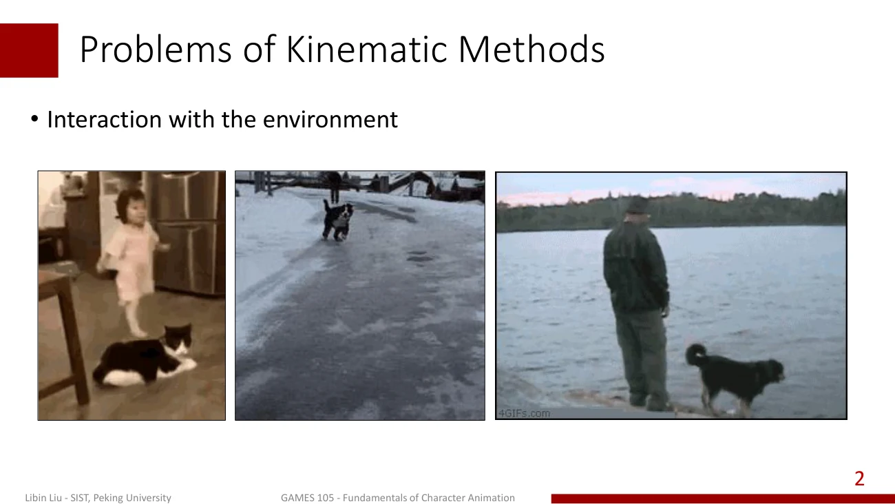
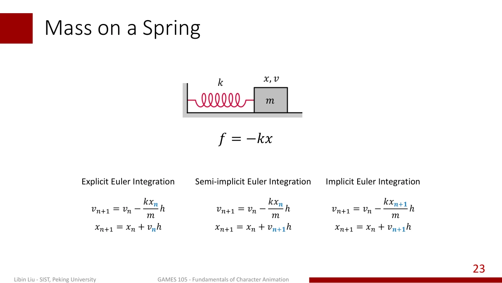
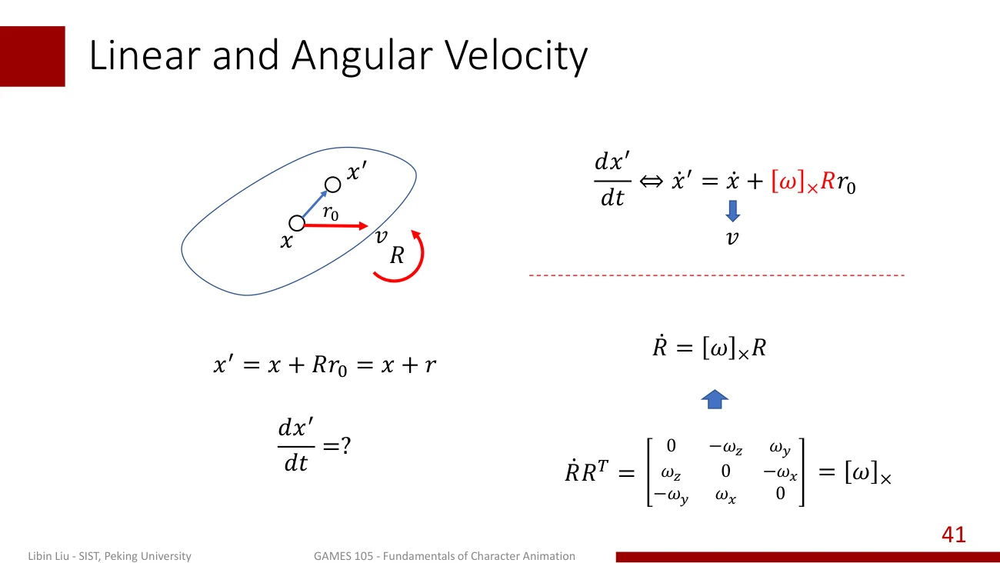
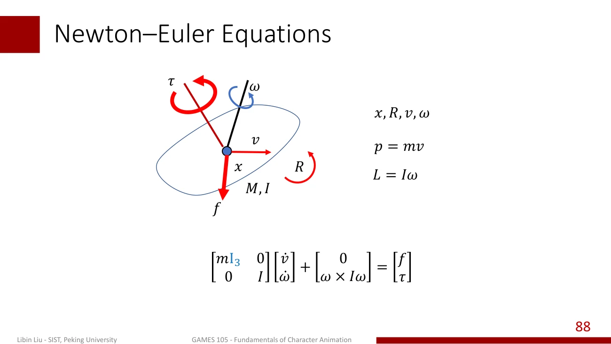
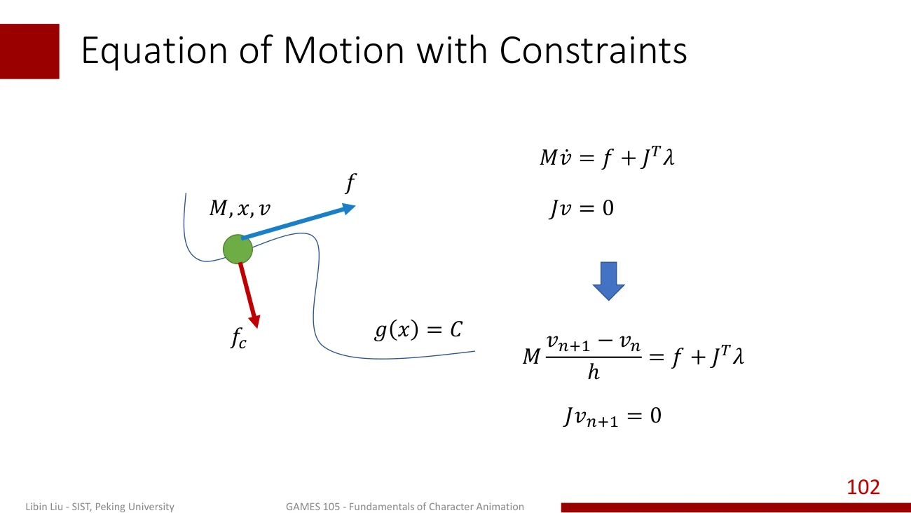
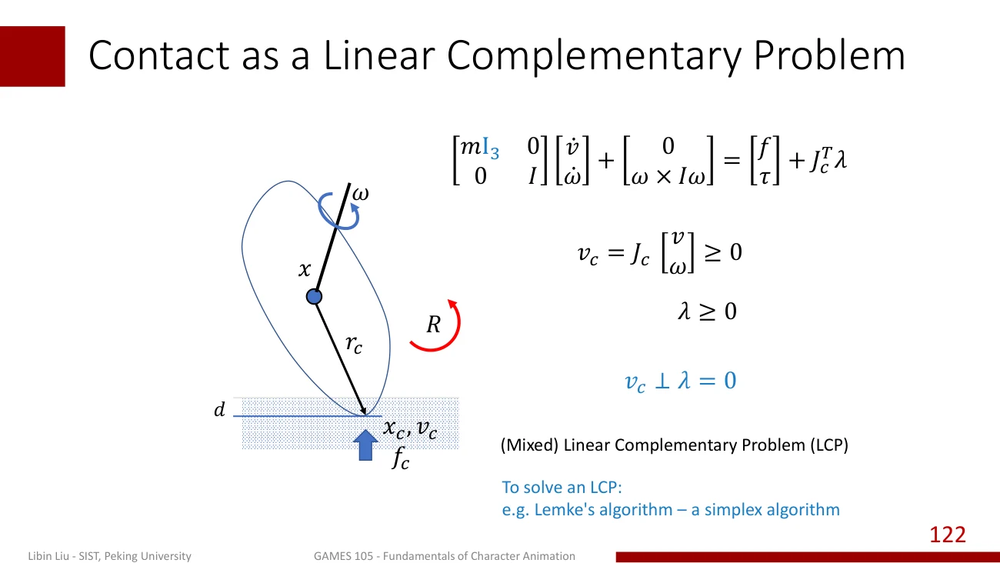

第 8 讲：基于物理的模拟与关节刚体
从质点动力学出发，推导刚体运动方程，并用约束把多个刚体连成角色骨架
◆ 学完这一讲，你应该能
理解为什么运动学方法无法处理环境交互，而物理模拟可以
掌握显式/半隐式/隐式欧拉积分及其稳定性差异
能写出刚体的位置、朝向、线速度、角速度以及它们之间的运动学关系
理解转动惯量、角动量、牛顿-欧拉方程，并能进行数值积分
理解约束（关节、接触）如何通过雅可比矩阵和拉格朗日乘子引入运动方程
知道接触模型（惩罚、约束、LCP）的基本思想
核心结论速记
物理模拟的核心是求解微分方程：已知力，通过数值积分更新状态
显式欧拉简单但不稳定，半隐式欧拉（辛欧拉）在游戏/实时模拟中最常用，隐式欧拉稳定但需解方程
刚体状态包括位置 x、朝向 R（或四元数 q）、线速度 v、角速度 ω
刚体运动方程：M v̇ = f，I ω̇ + ω × (Iω) = τ，其中 I 是转动惯量张量
多个刚体通过约束连接，约束力不做功，用雅可比矩阵 J 和拉格朗日乘子 λ 表示
约束求解最终化为线性系统（或 LCP），可用投影高斯-赛德尔等方法迭代求解
接触可以建模为约束：法向非穿透 + 摩擦锥，形成线性互补问题（LCP）
011. 为什么需要物理模拟
运动学方法（如关键帧动画、动作捕捉）能产生逼真的角色动作，但有一个根本缺陷：角色无法与环境交互。例如角色推一个箱子、在斜坡上行走、被外力击倒，这些都需要根据物理规律实时计算反作用力。物理模拟通过求解动力学方程，让角色自然地响应环境。
物理模拟的基本流程是：
- 定义状态（位置、速度等）
- 计算受力（重力、肌肉力、接触力等）
- 数值积分更新状态
- 处理约束（关节、接触）
在角色动画中，物理模拟常用于布料、毛发、刚体道具，以及近年来基于物理的角色控制（如 ControlVAE 等）。本讲聚焦于关节刚体系统，即用多个刚体通过关节连接来模拟角色骨架。

常见坑
误以为物理模拟一定比运动学方法好：实际上物理模拟计算量大、调参困难，且难以精确控制动作风格。
忽略数值积分稳定性：直接使用显式欧拉可能导致模拟爆炸。
UE / Unity 落地
UE 中的 Chaos Physics 和 Unity 中的 PhysX 都基于类似的刚体动力学求解器。
在 UE 中，物理资产（Physics Asset）定义了角色的刚体和约束，用于布娃娃（Ragdoll）模拟。
022. 质点动力学与数值积分
先从最简单的质点开始。质点的状态是位置 \(x\) 和速度 \(v\)，质量 \(m\)，受力 \(f\)。根据牛顿第二定律： \[ f = ma \] 加速度 \(a = \dot{v}\)，速度 \(v = \dot{x}\)。因此： \[ \dot{v} = \frac{f}{m}, \quad \dot{x} = v \] 这是一个常微分方程（ODE）。给定初始状态，我们可以通过数值积分逐步更新状态。
显式欧拉（前向欧拉）： \[ v_{n+1} = v_n + a_n h \] \[ x_{n+1} = x_n + v_n h \] 其中 \(h\) 是时间步长。显式欧拉简单，但不稳定：对于弹簧振子等系统，能量会不断增加，导致发散。
半隐式欧拉（辛欧拉）： \[ v_{n+1} = v_n + a_n h \] \[ x_{n+1} = x_n + v_{n+1} h \] 注意位置更新使用了新速度。半隐式欧拉在游戏物理中广泛使用，因为它比显式欧拉稳定得多，且计算量小。
隐式欧拉（后向欧拉）： \[ v_{n+1} = v_n + a_{n+1} h \] \[ x_{n+1} = x_n + v_{n+1} h \] 隐式欧拉需要求解方程（因为 \(a_{n+1}\) 依赖于 \(v_{n+1}\)），但它是无条件稳定的，适合刚性系统。
以弹簧振子为例：\(f = -kx\)。显式欧拉会导致振幅越来越大；半隐式欧拉能保持能量有界；隐式欧拉会耗散能量但稳定。

常见坑
使用显式欧拉模拟弹簧系统 → 能量爆炸 → 改用半隐式欧拉或减小步长。
步长过大导致数值不稳定 → 减小步长或使用隐式方法。
UE / Unity 落地
UE 和 Unity 的物理引擎默认使用半隐式欧拉或类似方法，并采用子步（substep）提高稳定性。
在 UE 中，可以通过设置物理子步（Substepping）来改善模拟质量。
半隐式欧拉伪代码（cpp）
// 半隐式欧拉
v += (f / m) * h;
x += v * h;033. 刚体的运动学表示
刚体有位置 \(x\) 和朝向 \(R\)（旋转矩阵）。刚体上一点 \(r\)（在刚体局部坐标系中）的世界坐标为： \[ x' = x + R r \] 对时间求导得到速度： \[ \dot{x}' = \dot{x} + \dot{R} r \] 其中 \(\dot{R}\) 与角速度 \(\omega\) 有关： \[ \dot{R} = \omega \times R \] 这里 \(\omega \times\) 表示叉乘矩阵。因此： \[ \dot{x}' = v + \omega \times (R r) \] 即刚体上一点的速度等于质心速度加上角速度叉乘该点的相对位置。
角速度 \(\omega\) 是一个三维向量，其方向是旋转轴，大小是角速率。旋转矩阵的导数可以写成 \(\dot{R} = [\omega]_{\times} R\)，其中 \([\omega]_{\times}\) 是反对称矩阵。
在实际数值积分中，我们通常用四元数 \(q\) 表示朝向，更新公式为： \[ \dot{q} = \frac{1}{2} \bar{\omega} q \] 其中 \(\bar{\omega} = (0, \omega)\)。更新后需要对四元数归一化。

常见坑
直接对旋转矩阵积分导致矩阵不再正交 → 需要正交化（如 Gram-Schmidt）或使用四元数。
四元数未归一化 → 导致旋转错误 → 每次更新后归一化。
UE / Unity 落地
UE 和 Unity 内部使用四元数表示旋转，物理引擎会自动处理归一化。
在 UE 中，FQuat 和 FRotator 用于表示旋转，物理模拟中通常使用四元数。
044. 刚体的动力学：质量、惯量与动量
刚体可以看作无数质点的集合。总质量 \(M = \sum m_i\)，质心位置 \(x_c = \frac{\sum m_i x_i}{M}\)。
线动量 \(p = M v_c\)，角动量 \(L = I \omega\)，其中 \(I\) 是转动惯量张量： \[ I = \sum m_i (r_i^T r_i \mathbf{1} - r_i r_i^T) \] 这里 \(r_i\) 是质点相对于质心的位置。转动惯量描述了刚体对角速度的抵抗程度。
转动惯量依赖于刚体的质量分布和朝向。当刚体旋转时，其世界坐标系下的转动惯量张量变为： \[ I_{world} = R I_{body} R^T \] 其中 \(I_{body}\) 是局部坐标系下的转动惯量（通常是对角矩阵，如果局部坐标轴是主轴）。
牛顿-欧拉方程： \[ M \dot{v} = f \] \[ I \dot{\omega} + \omega \times (I \omega) = \tau \] 其中 \(f\) 是合外力，\(\tau\) 是合外力矩。第二个方程中的 \(\omega \times (I \omega)\) 是陀螺项，它使得刚体在无外力矩时也可能产生复杂运动（如网球拍定理）。

常见坑
忽略陀螺项 → 高速旋转时模拟错误 → 必须包含 \(\omega \times (I\omega)\)。
转动惯量未随朝向更新 → 使用 \(I_{world} = R I_{body} R^T\)。
UE / Unity 落地
UE 的物理资产中可以为每个刚体设置质量、转动惯量（通过形状自动计算或手动覆盖）。
Unity 的 Rigidbody 组件有 mass、inertia tensor 等属性。
055. 多刚体系统与约束
角色由多个刚体通过关节连接。每个刚体有自己的运动方程，关节施加约束力。
约束：例如两个刚体在关节处的位置必须相同：\(g(x) = 0\)。对时间求导得到速度约束：\(J v = 0\)，其中 \(J\) 是雅可比矩阵。
约束力不做功（理想约束），因此约束力可以写成 \(f_c = J^T \lambda\)，其中 \(\lambda\) 是拉格朗日乘子。
带约束的运动方程： \[ M \dot{v} = f + J^T \lambda \] \[ J v = 0 \] 这是一个微分代数方程（DAE）。数值求解时，通常先离散化，然后求解一个线性系统： \[ (J M^{-1} J^T) \lambda = -J v_{n} - J M^{-1} h f \] 实际中会加入稳定项（如 Baumgarte 稳定化）来修正位置误差。
对于多个刚体和多个约束，可以将所有刚体的状态堆叠成一个大向量，形成统一的方程 \(M \dot{v} + C(x,v) = f + J^T \lambda\)，\(J v = 0\)。

常见坑
约束求解不收敛 → 增加迭代次数或调整稳定参数。
约束力过大导致爆炸 → 使用软约束或减小时间步长。
UE / Unity 落地
UE 的物理约束（Physics Constraint）对应这里的关节约束，可以设置线性/角度限制。
Unity 的 Configurable Joint 和 Hinge Joint 等对应不同类型的关节。
066. 接触与摩擦
接触是角色与环境交互的关键。接触力需要满足：
- 法向力非负（只能推不能拉）
- 法向速度非负（不能穿透）
- 法向力与法向速度互补：\(f_n \cdot v_n = 0\)
这构成了一个线性互补问题（LCP）。对于摩擦，还需满足库仑摩擦定律：\(|f_t| \le \mu f_n\)。
接触可以建模为约束：\(v_c = J_c v\)，其中 \(v_c\) 是接触点的相对速度。法向约束为 \(v_{c,\perp} \ge 0\)，\(f_{c,\perp} \ge 0\)，且互补。
求解 LCP 的方法包括：投影高斯-赛德尔（PGS）、Lemke 算法等。实际物理引擎通常使用迭代方法（如 PGS）来求解接触力。
另一种简单方法是惩罚法：将接触力建模为弹簧阻尼：\(f_n = -k_p d - k_d v_{c,\perp}\)，其中 \(d\) 是穿透深度。这种方法简单但需要调参，且可能不稳定。

常见坑
惩罚法参数不当 → 穿透或抖动 → 调整刚度和阻尼。
摩擦模型忽略静摩擦 → 物体滑动 → 使用更复杂的摩擦模型或约束。
UE / Unity 落地
UE 和 Unity 的物理引擎内部使用迭代求解器处理接触和摩擦。
在 UE 中，可以调整物理材质的摩擦系数和恢复系数。
引擎对照表
| 概念 / 效果 | Unreal Engine | Unity |
|---|---|---|
刚体状态 | UPrimitiveComponent 的 BodyInstance | Rigidbody 组件 |
关节约束 | Physics Constraint 组件 | Configurable Joint / Hinge Joint |
物理材质 | Physical Material | Physic Material |
接触求解 | Chaos 物理求解器 | PhysX 求解器 |
布娃娃 | Physics Asset | Ragdoll（通过关节配置） |
术语双语表
| English | 中文 | 说明 |
|---|---|---|
| Explicit Euler | 显式欧拉 | 用当前导数更新状态，简单但不稳定 |
| Semi-implicit Euler | 半隐式欧拉 | 先用当前加速度更新速度，再用新速度更新位置，稳定且高效 |
| Implicit Euler | 隐式欧拉 | 用未来导数更新状态，需要解方程，无条件稳定 |
| Angular Velocity | 角速度 | 描述旋转快慢和方向的向量 |
| Moment of Inertia | 转动惯量 | 刚体对角速度的抵抗程度，张量形式 |
| Newton-Euler Equations | 牛顿-欧拉方程 | 刚体的平动和转动运动方程 |
| Jacobian Matrix | 雅可比矩阵 | 描述约束速度与广义速度关系的矩阵 |
| Lagrange Multiplier | 拉格朗日乘子 | 用于引入约束力的未知量 |
| Linear Complementary Problem (LCP) | 线性互补问题 | 接触力与速度的互补条件形成的数学问题 |
| Baumgarte Stabilization | Baumgarte 稳定化 | 在约束求解中加入位置误差修正项，防止漂移 |
课后练习
01 比较显式欧拉、半隐式欧拉和隐式欧拉的稳定性，并说明为什么游戏物理引擎常用半隐式欧拉。
查看答案
提示：
考虑能量变化和计算复杂度。
显式欧拉简单但能量增加，不稳定；隐式欧拉稳定但需要解方程，计算量大；半隐式欧拉在稳定性和计算量之间取得平衡，能保持能量有界，且只需一次力计算，因此游戏引擎常用。
02 一个刚体的局部转动惯量为 diag(2, 3, 4) kg·m²，当前朝向旋转矩阵为 R（绕 z 轴旋转 90 度）。求世界坐标系下的转动惯量张量。
查看答案
提示：
使用 \(I_{world} = R I_{body} R^T\)。
绕 z 轴旋转 90 度：R = [[0,-1,0],[1,0,0],[0,0,1]]。计算得 I_world = diag(3, 2, 4)。
03 解释约束力为什么可以写成 \(J^T \lambda\)，并说明 \(\lambda\) 的物理意义。
查看答案
提示：
从虚功原理或约束力不做功的角度考虑。
约束力不做功，因此约束力必须垂直于约束流形，即位于约束雅可比矩阵的零空间的正交补空间，所以可表示为 \(J^T \lambda\)。\(\lambda\) 是拉格朗日乘子，代表约束力的强度。
04 在 UE 中，如何为一个角色设置布娃娃（Ragdoll）物理？简述步骤。
查看答案
提示：
涉及 Physics Asset、约束、碰撞体。
- 创建 Physics Asset，为每个骨骼生成碰撞体；2. 设置关节约束（如角度限制）；3. 在角色蓝图中启用物理模拟（Set Simulate Physics）或使用物理动画节点。